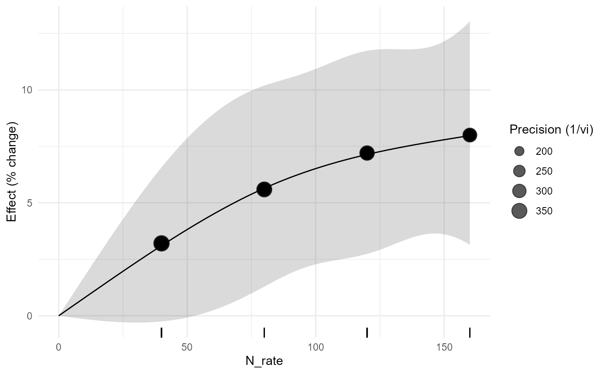
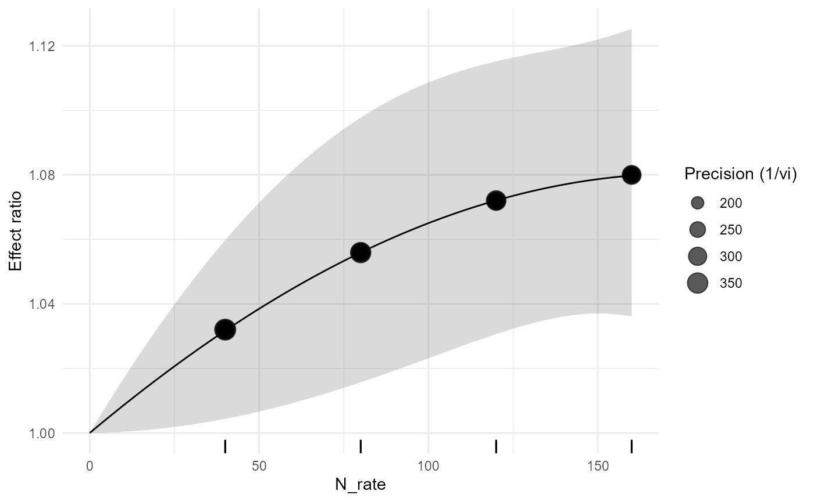

Correlated Dose-Response Meta-analysis for Agronomic Experiments
Source:vignettes/v06-dose-response-meta-analysis.Rmd
v06-dose-response-meta-analysis.Rmd1. Why dose-response is not ordinary meta-regression
Suppose one nitrogen experiment compares 40, 80, 120, and 160 kg N/ha with the same zero-N control. The four effect sizes share information from that control. They are therefore statistically correlated. A regression of all effect sizes on nitrogen rate that assumes independent sampling errors does not represent the design correctly.
apm_dose_response() is reserved for this multi-dose
structure. Version 0.3.0 routes random-effects dose-response curves
through dosresmeta. When that optional backend is absent,
only a covariance-aware fixed-effect GLS route is available through
metafor; a random-intercept model is deliberately not
treated as equivalent to random dose-response coefficients. Runtime
validation of the optional random-effects route is performed
locally.
2. Inspect the teaching data
head(fertilizer_dose_response)
#> study_id experiment_id dose_id effect_id control_id crop soil_texture
#> 1 FD01 FD01E1 FD01_N40 FD01_N40 FD01_N0 maize loam
#> 2 FD01 FD01E1 FD01_N80 FD01_N80 FD01_N0 maize loam
#> 3 FD01 FD01E1 FD01_N120 FD01_N120 FD01_N0 maize loam
#> 4 FD01 FD01E1 FD01_N160 FD01_N160 FD01_N0 maize loam
#> 5 FD02 FD02E1 FD02_N40 FD02_N40 FD02_N0 wheat clay
#> 6 FD02 FD02E1 FD02_N80 FD02_N80 FD02_N0 wheat clay
#> N_rate treatment control mean_t sd_t n_t mean_c sd_c n_c treatment_id
#> 1 40 N40 N0 3.922 0.408 4 3.8 0.42 4 FD01_N40
#> 2 80 N80 N0 4.013 0.436 4 3.8 0.42 4 FD01_N80
#> 3 120 N120 N0 4.074 0.464 4 3.8 0.42 4 FD01_N120
#> 4 160 N160 N0 4.104 0.492 4 3.8 0.42 4 FD01_N160
#> 5 40 N40 N0 4.231 0.408 5 4.1 0.46 5 FD02_N40
#> 6 80 N80 N0 4.330 0.436 5 4.1 0.46 5 FD02_N80
#> lnRR vi sei measure dose_unit
#> 1 0.03160066 0.005759502 0.07589138 ROM kg N ha-1
#> 2 0.05453802 0.006005054 0.07749228 ROM kg N ha-1
#> 3 0.06962425 0.006296919 0.07935313 ROM kg N ha-1
#> 4 0.07696104 0.006647002 0.08152915 ROM kg N ha-1
#> 5 0.03145140 0.004377341 0.06616147 ROM kg N ha-1
#> 6 0.05458057 0.004545359 0.06741928 ROM kg N ha-1
apm_shared_control(fertilizer_dose_response, study=experiment_id,
control_id=control, treatment_id=treatment)
#> <apm_shared_control>
#> n_rows n_studies n_control_groups n_shared_control_groups
#> 32 8 8 8
#> n_rows_in_shared_groups max_multiplicity n_conflicts
#> 32 4 0
#> Construct a sampling covariance matrix before synthesis; do not treat these contrasts as independent.The dataset is synthetic and deterministic. It is intended for documentation and numerical validation, not as agronomic evidence.
3. Covariance before the curve
Vn <- apm_vcov(fertilizer_dose_response, cluster=study_id, shared_control=TRUE)
Vn[1:4,1:4]
#> <apm_vcov> 4 x 4The diagonal contains the sampling variances. Nonzero off-diagonal terms arise because doses within a study reuse the same zero-N reference.
4. Linear dose-response
d_lin <- apm_dose_response(fertilizer_dose_response, effect=lnRR, dose=N_rate,
study=study_id, form="linear", method="fixed")
d_lin
#> <apm_dose> form=linear | backend=dosresmeta | covariance=apm_vcov(shared-control metadata)
#> term estimate
#> (Intercept) 0.0004821551
summary(d_lin)
#> <summary.apm_dose> backend=dosresmeta
#> term estimate se
#> (Intercept) 0.0004821551 0.000131668
#> Covariance source: apm_vcov(shared-control metadata)
apm_dose_plot(d_lin, transform="percent")
The fitted curve is on lnRR internally. Percentage display is a transformation for interpretation, not a different fitted model.
5. Quadratic response
d_quad <- apm_dose_response(fertilizer_dose_response, effect=lnRR, dose=N_rate,
study=study_id, form="quadratic", method="fixed")
predict(d_quad, newdata=c(40,80,120,160), transform="percent")
#> <apm_prediction> transform=percent
#> dose pred se ci_lower ci_upper pi_lower pi_upper
#> 40 3.171221 0.01368706 0.4403285 5.976365 NA NA
#> 80 5.592935 0.01981049 1.5715633 9.773518 NA NA
#> 120 7.208413 0.02010629 3.0657476 11.517589 NA NA
#> 160 7.979320 0.02107063 3.6108501 12.531974 NA NA
apm_dose_plot(d_quad, transform="percent", prediction=TRUE)
A quadratic specification should be used because the scientific question permits curvature, not simply because its fit statistic is lower.
6. Natural spline
d_ns <- apm_dose_response(fertilizer_dose_response, effect=lnRR, dose=N_rate,
study=study_id, form="ns", df=3, method="fixed")
apm_dose_plot(d_ns, transform="percent")
Flexible curves should be interpreted only over the observed dose support. Extrapolating beyond the highest experimental rate can produce biologically implausible predictions.
7. Random-effects dose-response and study-level moderators
When dosresmeta is installed, version 0.3.0 fits
random-effects dose-response curves and can pass study-level moderators
through its dedicated backend. Moderators are checked so that they
cannot silently vary across doses within a study.
d_random <- apm_dose_response(fertilizer_dose_response, effect=lnRR, dose=N_rate,
study=study_id, form="quadratic", method="reml")
d_soil <- apm_dose_response(fertilizer_dose_response, effect=lnRR, dose=N_rate,
study=study_id, form="quadratic", moderators=~soil_texture)
d_soilThe example is not evaluated in the routine vignette build because the optional backend is part of the full local-validation profile.
8. What the plot communicates
apm_dose_plot(d_quad, observed=TRUE, prediction=TRUE, rug=TRUE)
The display combines observed effects, the fitted mean curve, confidence uncertainty, a prediction band when identifiable, and the dose support. The observed points are retained so the fitted shape is never shown without the data that support it.
9. Numerical validation contract
During local validation the package must demonstrate that:
- the diagonal of the covariance matrix reproduces
vi; - the matrix is symmetric and positive semidefinite within numerical tolerance;
- shared-control covariance agrees with
metafor::vcalc(); - the
dosresmetafit is reproducible under the same basis andSlistinputs when that backend is installed; - stored predictions equal predictions recomputed from the fitted coefficient vector and covariance matrix; and
- optional-backend absence permits only the documented fixed-effect GLS route and produces an explicit error for random-effects dose-response rather than a silent model substitution.
10. Agronomic reporting
A dose-response synthesis should state the reference dose, physical dose unit, response scale, covariance construction, curve basis, heterogeneity model, prediction support, and whether the estimated curve is intended as descriptive synthesis or supports a stronger causal interpretation.